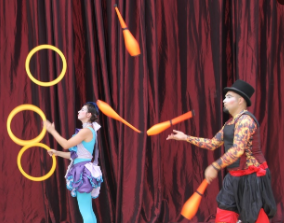
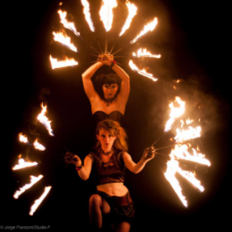
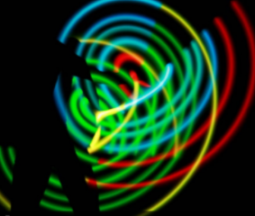
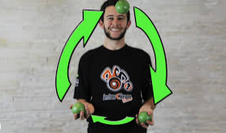

Tipos de Malabares
Malabares Convencionais

São os mais comumente usados por artistas, exigindo técnicas e destrezas do mais alto nível, mostrando suas habilidade com os mais variados objetos.
Aqui tudo depende da sua criatividade
Confira AQUI um vídeo sobre!
Malabares de Fogo

Como o próprio nome diz, o artista utiliza de aparelhos onde o fogo pode ser apresentado.
Esse tipo de performance é ideal para ambiente noturnos, ou lugares onde exista a possibilidade de black-out.
O artista também é capacitado para evitar acidentes, pois há um grau de risco quando se mexe com qualquer tipo de fogo.
Esta performance também é, visualmente, deslumbrante.
Confira AQUI um vídeo sobre!
Malabares de Luz

No mesmo formato que o malabares de fogo, mas agora os aparelhos, ao invés de fogo, possuem luz.
São ideias para lugares noturnos e lugares com possibilidade de black-out, juntamente com lugares onde não se pode fazer o fogo.
O público deslumbra-se com a mágia que os malabares de luz podem proporcionar.
Confira AQUI um vídeo sobre!
Exemplos de Malabares
5 Dicas para malabarismo com 3 bolinhas

- Vista roupas confortavés
- Ache um lugar tranquilo para praticar
- Não desista na primeira tentativa
- Realize práticas contantes
- Divirta-se muito!!
- Confira AQUI um vídeo sobre!